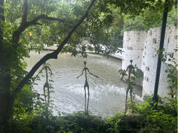
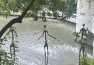
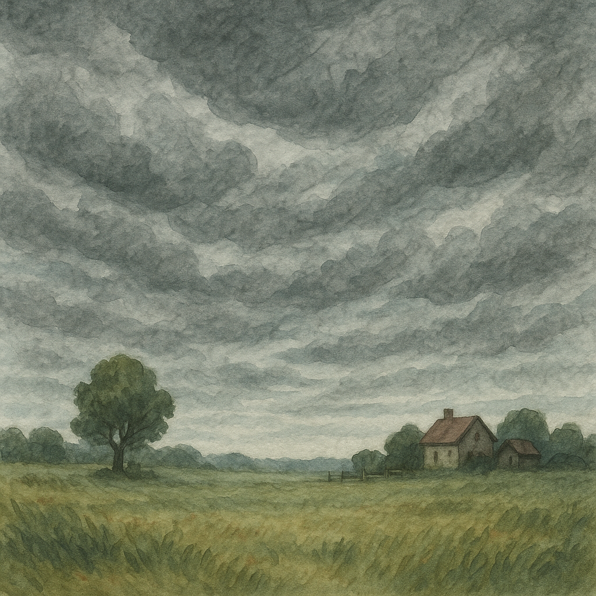
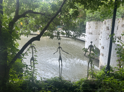

随便走走，当时快要下雨了，天气比较舒服 很喜欢这张照片整体的意境 凉爽、灵性
2025.6，上海的一个文创园
G1 艺术与自然 → left [S_overlap_F1, S_image_F2]
G2 天气变化 → right [S_text_F3]
画布: 1396 × 509 px
规划耗时: 10839.03 ms
OmDet: 0 个检测 ()
S_image_F2 crop: [0,0]-[254,190] 来源=llm 匹配=无
S_text_F3 AI生成图片 (耗时 36011.89ms)
S_overlap_F1 crop: [50,50]-[200,150] 来源=llm 匹配=无